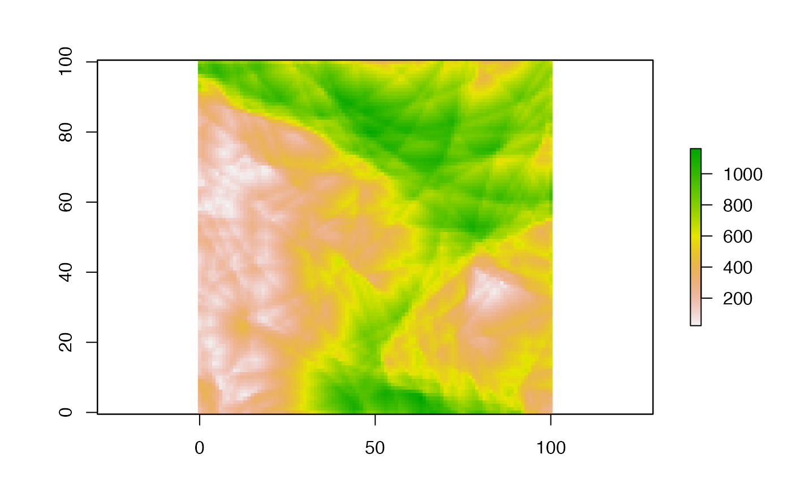

Dynamically generates functions to all valid SAGA-GIS libraries and tools. These functions are stored within a saga S3 object as a named list of functions
saga_gis(
saga_bin = NULL,
grid_caching = FALSE,
grid_cache_threshold = 100,
grid_cache_dir = NULL,
cores = NULL,
backend = "raster",
raster_backend = "raster",
vector_backend = "sf",
raster_format = "SAGA",
vector_format = c("ESRI Shapefile", "GeoPackage"),
all_outputs = TRUE,
intern = TRUE,
opt_lib = NULL,
temp_path = NULL,
verbose = FALSE
)The path to saga_cmd executable. If this argument is not supplied then an automatic search for the saga_cmd executable will be performed.
A logical whether to use file caching in saga_cmd geoprocessing operations for rasters that are too large to fit into memory.
A number to act as a threshold (in Mb) before file caching is activated for loaded raster data.
The path to directory for temporary files generated by file caching. If not provided then the result from `base::tempdir()` is used.
An integer for the maximum number of processing cores. By default all cores are utilized. Needs to be set to 1 if file caching is activated.
A character vector to specify the library to use for handling raster data. Currently, "raster", "terra" or "stars" is supported. The default is "raster". Will be deprecated in the future in favour of `raster_backend`.
A character vector to specify the library to use for handling raster data. Currently, "raster", "terra" or "stars" is supported. The default is "raster".
A character to specify the library to use for handling vector data. Currently, "sf", "SpatVector" or "SpatVectorProxy" is supported. The default is "sf", however for large vector datasets, using the "SpatVectorProxy" backend from the `terra` package has performance advantages because it allows file-based which can reduce repeated reading/writing when passing data between R and SAGA-GIS.
A character to specify the default format used to save raster data sets that are produced by SAGA-GIS. Available options are one of "SAGA", "SAGA Compressed" or "GeoTIFF". The default is "SAGA".
A character to specify the default format used for vector data sets that are produced by SAGA-GIS, and also used to save in-memory objects to be read by SAGA-GIS. Available options are of of "ESRI Shapefile", "GeoPackage", or "GeoJSON". The default is "ESRI Shapefile" for SAGA versions < 7.0 and GeoPackage for more recent versions. Attempting to use anything other than "ESRI Shapefile" for SAGA-GIS versions < 7.0 will raise an error.
A logical to indicate whether to automatically use temporary files to store all output data sets from each SAGA-GIS tool. Default = TRUE. This argument can be overridden by the `.all_outputs` parameter on each individual SAGA-GIS tool function that is generated by `Rsagacmd::saga_gis()`.
A logical to indicate whether to load the SAGA-GIS geoprocessing results as an R object, default = TRUE. For instance, if a raster grid is output by SAGA-GIS then this will be loaded as either as `RasterLayer` or `SpatRaster` object, depending on the `raster_backend` setting that is used. Vector data sets are always loaded as `sf` objects, and tabular data sets are loaded as tibbles. The `intern` settings for the `saga` object can be overridden for individual tools using the `.intern` argument.
A character vector with the names of a subset of SAGA-GIS libraries. Used to link only a subset of named SAGA-GIS tool libraries, rather than creating functions for all available tool libraries.
The path to use to store any temporary files that are generated as data is passed between R and SAGA-GIS. If not specified, then the system `base::tempdir()` is used.
Logical to indicate whether to output all messages made during SAGA-GIS commands to the R console. Default = FALSE. This argument can be overriden by using the `.verbose` argument on each individual SAGA-GIS tool function that is generated by `Rsagacmd::saga_gis()`.
A S3 `saga` object containing a nested list of functions for SAGA-GIS libraries and tools.
# \dontrun{
# Initialize a saga object
library(Rsagacmd)
library(raster)
#> Loading required package: sp
saga <- saga_gis()
# Alternatively initialize a saga object using file caching to handle large
# raster files
saga <- saga_gis(grid_caching = TRUE, grid_cache_threshold = 250, cores = 1)
# Example terrain analysis
# Generate a random DEM
dem <- saga$grid_calculus$random_terrain(radius = 100)
# Use Rsagacmd to calculate the Terrain Ruggedness Index
tri <- saga$ta_morphometry$terrain_ruggedness_index_tri(dem = dem)
plot(tri)

# Optionally run command and do not load result as an R object
saga$ta_morphometry$terrain_ruggedness_index_tri(dem = dem, .intern = FALSE)
#> [1] "/var/folders/5q/qrx350ks47n73k5myy4jmff00000gn/T//RtmpQmaJtp/file16608311d4e1e.sdat"
# Initialize a saga object but do not automatically save all results to
# temporary files to load into R. Use this if you are explicitly saving each
# output because this will save disk space by not saving results from tools
# that output multiple results that you may be want to keep.
saga <- saga_gis(all_outputs = FALSE)
# }